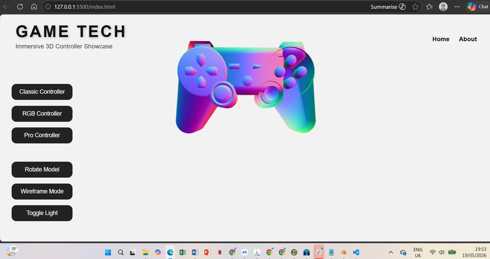
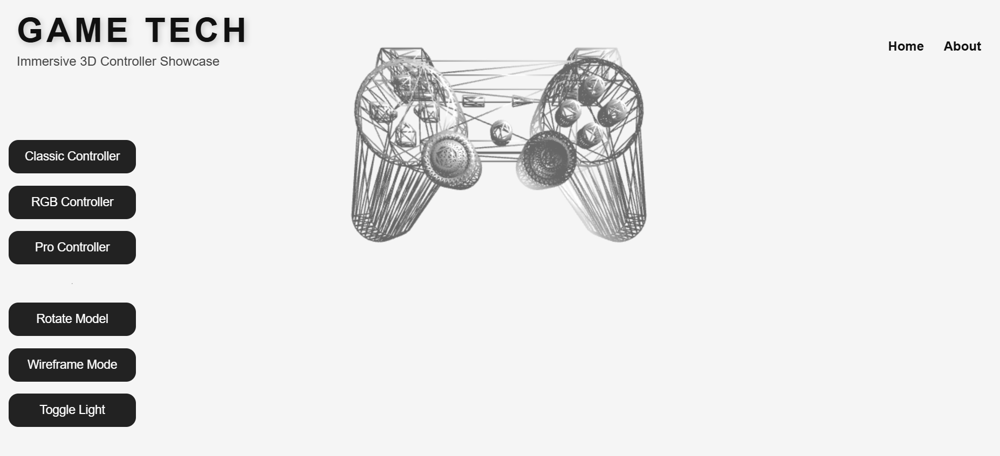
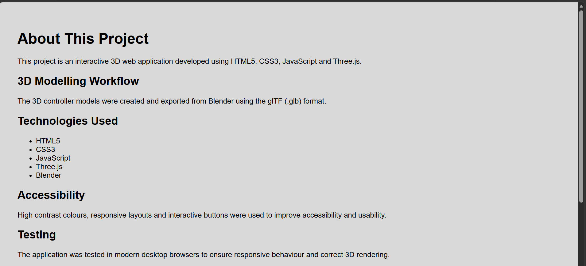

This project is an interactive Web 3D application developed using HTML5, CSS3, JavaScript and Three.js. The application was designed to showcase multiple gaming controller models inside a responsive browser-based environment using real-time WebGL rendering.
The purpose of the application is to demonstrate the integration of modern frontend web technologies with interactive 3D graphics. Users can dynamically switch between multiple controller models, interact with lighting systems, activate wireframe rendering and rotate objects within the scene.
The project combines several important areas of multimedia development including 3D modelling, responsive web design, JavaScript interaction systems and browser rendering pipelines. Blender was used to create and export the controller models while Three.js handled the rendering and interaction systems.
The application was designed to simulate a modern product showcase environment where users can explore multiple 3D gaming devices interactively through a clean and accessible user interface.
The main aim of this project was to design and develop an immersive and responsive 3D web application that demonstrates interactive graphics rendering using WebGL technologies.
The application focuses on combining 3D modelling, user interface design and browser-based interaction into a single integrated experience.
Blender was used to design and modify multiple gaming controller models including PlayStation, Xbox and Nintendo Wii inspired designs. Each model was developed separately to ensure visual distinction between the controller types and to satisfy the project requirement for multiple original 3D assets.
The modelling workflow involved polygon modelling techniques, object scaling, edge refinement and surface smoothing to create cleaner geometry and improved rendering quality. Additional adjustments were made to button placement, grip structures and overall silhouette designs in order to create visually unique controllers.
Materials and shading systems were prepared within Blender before exporting the final assets into GLB format. The GLB format was selected because it provides efficient compression, material support and browser compatibility for WebGL applications.
The final models were optimized to reduce unnecessary polygon counts while maintaining sufficient detail for interactive rendering within the browser environment.

Three.js was used as the primary JavaScript library for rendering the 3D environment and interactive controller models. The library provided the WebGL rendering pipeline, scene management system, lighting controls and animation framework required for the application.
GLTFLoader was implemented to dynamically import GLB models into the scene. This allowed the application to switch between multiple controller models through user interaction buttons without refreshing the page.
OrbitControls were integrated to allow users to rotate and inspect the controllers from multiple viewpoints. This created a more immersive and interactive user experience compared to static image rendering.
Additional JavaScript systems were implemented for animation, lighting toggles, wireframe rendering and responsive browser resizing. These features collectively enhanced the realism and usability of the application.
The project follows a lightweight MVC-inspired structure.
The Model layer consists of the GLB 3D assets and related data. The View layer is represented by HTML and CSS user interface components. The Controller layer is implemented using JavaScript logic inside app.js.

The application was tested using multiple modern desktop browsers including Google Chrome and Microsoft Edge. Testing focused on rendering stability, responsive layout behaviour, animation consistency and user interaction systems.
Several interaction systems were verified during testing including model switching, wireframe rendering, lighting controls and object rotation. Browser resizing was also tested to ensure that the Three.js renderer correctly updated the camera aspect ratio and viewport dimensions.
Performance testing demonstrated that the optimized GLB models loaded efficiently without significant lag or rendering issues. The final application maintained stable frame rendering throughout user interaction and animation sequences.
Minor development challenges included material rendering problems, incorrect lighting behaviour and model positioning issues. These problems were resolved through adjustments to material configuration, lighting intensity and object centering systems.

The complete source code and 3D assets are available on GitHub.
View GitHub RepositoryFuture development could include more advanced GLSL shader systems, improved texture mapping, animated controller components and database integration using PHP and SQLite.
Additional enhancements may also include mobile optimization, advanced post-processing effects, audio integration and improved accessibility support for keyboard-only navigation.
This project successfully demonstrates the integration of interactive WebGL graphics, responsive web technologies and real-time 3D interaction within a browser environment.